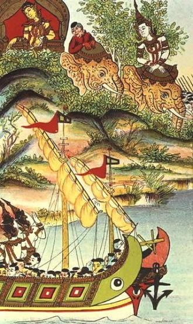

Various factors contribute to the Cambodian culture including Theravada Buddhism, Hinduism, French colonialism, Angkorian culture, and modern globalization. The Cambodian Ministry of Culture and Fine Arts is responsible for promoting and developing Cambodian culture. Cambodian culture not only includes the culture of the lowland ethnic majority, but also some 20 culturally distinct hill tribes colloquially known as the Khmer Loeu, a term coined by Norodom Sihanouk to encourage unity between the highlanders and lowlanders.  Rural Cambodians wear a krama scarf which is a unique aspect of Cambodian clothing. The sampeah is a traditional Cambodian greeting or a way of showing respect to others. Khmer culture, as developed and spread by the Khmer empire, has distinctive styles of dance, architecture, and sculpture, which have been exchanged with neighbouring Laos and Thailand throughout history. Angkor Wat (Angkor means "city" and Wat means "temple") is the best-preserved example of Khmer architecture from the Angkorian era along with hundreds of other temples that have been discovered in and around the region. Traditionally, the Khmer people have a recorded information on Tra leaves. Tra leaf books record legends of the Khmer people, the Ramayana, the origin of Buddhism and other prayer books. They are taken care of by wrapping in cloth to protect from moisture and the climate.